Неужели здесь, рядом, есть ещё кто-то вроде меня — запертый в этом Лагерном аду? У меня столько вопросов, но в ответное письмо я могу втиснуть только парочку.
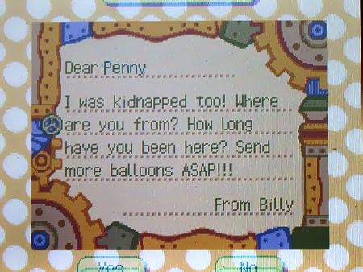
Теперь у меня другая проблема — как получить от неё ответ? Ветер дует на запад, так что мой шар улетит в другую сторону — не к Пенни. Да и где мне взять гелиевый шар? Мысли несутся, но я вдруг вспоминаю, что у Нука в лавке была детская рогатка. В голову приходит безумный план.
Я покупаю рогатку, стараясь не выдать своего волнения. Хотя, если честно, Нуку уже, похоже, всё равно, что я делаю. А пару дней назад я заметил на витрине топор.
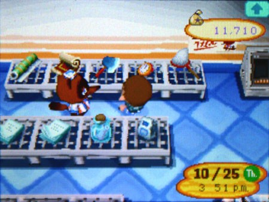
Такое ощущение, что он только что совершил ошибку. Неужели он просто так даст мне купить оружие? Нет тут ли случаем подвоха?

Об этом можешь не беспокоиться, Нук.
Я нахожу самую большую ракушку, засовываю туда записку и рисую на ней яркий красный крест, иду к восточной стене.
Собрав последние силы усталого ребёнка, я натягиваю рогатку и отправляю свою ракушку-письмо через стену, которая выглядит подозрительно искусственной. Мне везёт — она перелетает. Ветер доносит до меня звук осыпающейся гальки с другой стороны. Я молюсь, чтобы моя догадка была верна.
И меня снова вынуждают ждать. Снова вынуждают надеяться на доброту незнакомки, которая неизбежно меня подведёт.
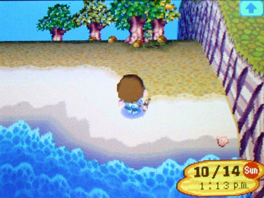
Когда я не копал, я смотрел на восток, выискивая хоть один солнечный блик на надутом шаре. Я прокручивал в голове сотни вариантов того, как всё закончится неудачей. Может, Пенни поймали. Может, её вообще нет. Может, она за сотни километров отсюда. Может, она так и не нашла моё письмо — оно, быть может, так и гниёт где-то в пустом поле.
Шанс, что она его найдёт и пришлёт ответ, был один на миллион.
И сегодня я сорвал джекпот.
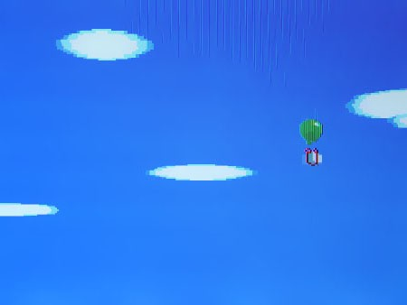
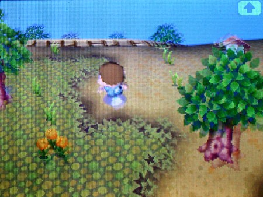
Я бежал за ним, словно голодный лев за газелью.
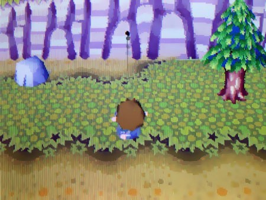
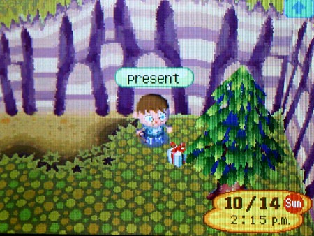
В свободное время я тренировался с рогаткой и стал стрелять без промаха. Всего два выстрела — и посылка шлёпнулась на землю. Я подхватил её, едва сдерживая восторг, и улизнул в дом, срывая обёртку с такой радостью, какой не чувствовал с самого прибытия сюда. Как Рождество для узника концлагеря.
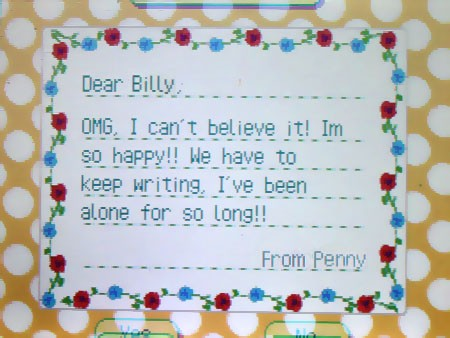
В этот раз она прислала мне бутылку с землёй вместе с письмом. Со временем я понял, что все эти предметы в посылках не имели значения — они просто утяжеляли шар, чтобы тот не улетел в небо. Письмо — вот что было важно.
Следующие несколько недель мы с Пенни переписывались только по ночам. Она рассказывала, что раньше пускала бутылки с письмами по океану, но её поймали и наказали. На день рождения местные жители предложили ей любой подарок, и она попросила один воздушный шар каждый день до следующего дня рождения — чтобы «поднять» настроение. Хитро придумала.
Мы начали сравнивать наш быт — что одинаково, а что нет. У нас обоих жили странные животные, которые въезжали и уезжали, когда хотели. У нас были одни и те же здания. К моему ужасу, обоими городками управлял енот по имени Том Нук — правда, Пенни сказала, что раньше он был там каждый день, а теперь появляется раз в неделю, и то не всегда.
Мы обсуждали наши лагеря. Они звучали почти одинаково. Я попросил её нарисовать свой город и прислать рисунок. А пока я ждал, я нарисовал карту своего лагеря, чтобы отправить ей.
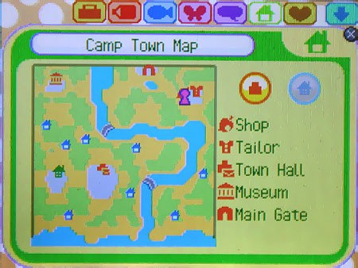
Я думал, меня уже ничем не удивишь после всего того пиздеца, что творился в лагере, но, признаюсь, когда я увидел её ответ, у меня всё внутри сжалось от ужаса.
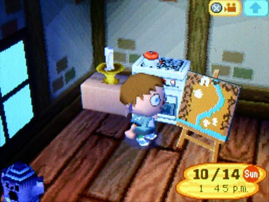
За исключением пары мелочей, она оказалась почти точной копией моей карты.
По моему истощённому мозгу начал расползаться ужас — несколько фрагментов головоломки встали на свои места. Тем же вечером я написал Пенни ответ.
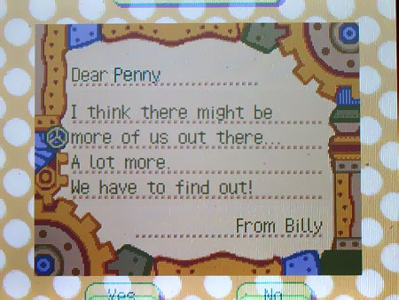
Мы с Пенни взялись за дело — начали медленно, но верно отправлять сообщения во все стороны с просьбой передавать дальше. Я одолжил у неё несколько шаров и отпустил их в разные стороны.
К моему облегчению и ужасу, ответы посыпались отовсюду.
Имена сыпались одно за другим:
- Джек
- Сара
- Аарон
- Джимми
- Филипп
- Эмили
Все они были напуганы.
Я начал получать шары с пугающей скоростью. И я начал беспокоиться, что кто-то это заметит.
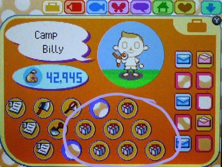
Мы попросили у наших новых друзей карты — хотелось понять, где мы и как отсюда выбраться. Когда рисунки начали собираться воедино, я никак не мог свыкнуться с мыслью, что все они были почти одинаковыми — все эти огороженные клетки под открытым небом. Я с удивлением заметил, что начал испытывать волнение. Может, если нас много, у нас всё получится! Может, мы правда сможем выбраться из этого кошмара! Но меня мучила одна логическая загвоздка. В этих картах было что-то не так. Я решил провести эксперимент.
Я одолжил у швеи кучу чистых листов — она уже начала косо посматривать на мой внезапный интерес к моде.
На каждом листе я начал собирать карты воедино, нанося их расположение как можно точнее. Синим я обозначил пляж, коричневым — стены лагерей. Белыми точками — ворота. Оказалось, что лагеря соединяются общими стенами, и, к счастью, именно это позволило Пенни находить мои послания.
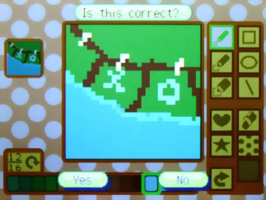
Я пометил свой лагерь большой «Х», а Пенни — «О». Со временем в голове начала складываться общая картина. Понять, кто где находится по отношению к другим, оказалось не так-то просто — пришлось разложить всё на нескольких больших листах. Нужно было место, чтобы развернуть всё это и как следует рассмотреть.
Глубокой ночью я вытащил своё творение за музей, где никто не мог меня увидеть, и начал собирать пазл, который сложился благодаря работе десятков маленьких, избитых и кровоточащих рук.
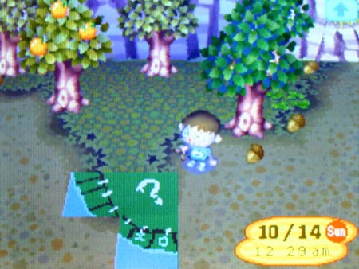
Чёрт. Насколько огромно это место?
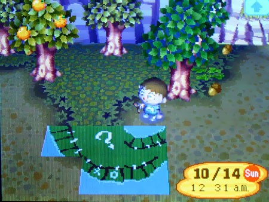
О, боже. Да ну нет! Это не может быть…
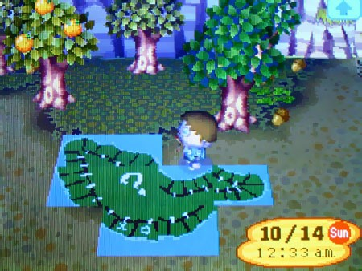
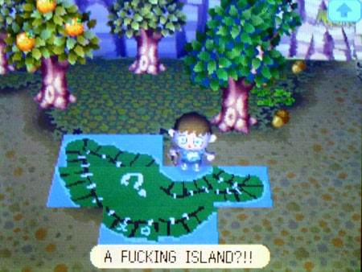
Впервые за несколько месяцев я пал на колени и заплакал.